Convolution#
The signals, which are functions of one or more independent variables, contain information about the behavior or nature of some phenomenon (i.e. voltages and currents as a function of time in an electrical circuit are examples of signals) , whereas the systems respond to particular signals by producing other signals or some desired behavior (a circuit is itself an example of a system, which in this case responds to applied voltages and currents)
In the many contexts in which signals and systems arise, there are a variety of prob- lems and questions that are of importance. In some cases, we are presented with a specific system and are interested in characterizing it in detail to understand how it will respond to various inputs.
Examples include the analysis of a circuit in order to quantify its response to different voltage and current sources and the determination of an aircraft’s response characteristics both to pilot commands and to wind gusts.
Transformation of the Independent Variable#
It is often of interest to determine the effect of transforming the independent variable of a given signal \(x(t)\) to obtain a signal of the form \(y(t)=x(\alpha t + \beta)\), where \(\alpha\) and \(\beta\) are given numbers.
Such a transformation of the independent variable preserves the shape of \(x(t)\), except that the resulting signal may be
linearly stretched if \(|\alpha|\) < 1,
linearly compressed if \(|\alpha|\) > 1,
reversed in time if \(\alpha < 0\),
and shifted in time if \(\beta\) is nonzero.
To get the new signal, we always first apply \(\beta\), if \(\beta>0\), we shift to the left, if \(\beta<0\) we shift to the right, then we apply \(\alpha\)
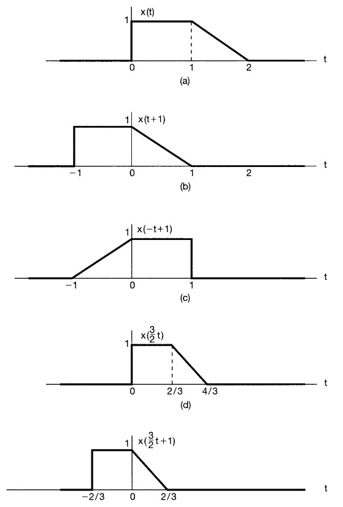
Periodic Signals#
An important class of signals is the class of periodic signals. A periodic continuous-time signal \(x(t)\) has the property that there is a positive value of \(T\) for which: \(x(t)=x(t+T)\).
In other words, a periodic signal has the property that it is unchanged by a time shift of \(T\). In this case, we say that \(x(t)\) is periodic with period \(T\)
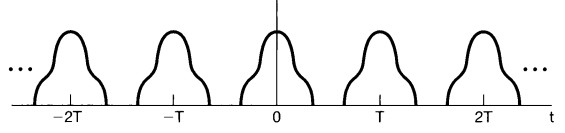
Even and Odd Signal#
Odd Signal#
for continous signals:
\(x(-t)=x(t)\)
for discrete signals:
\(x[-n]=x[n]\)
Even Signal#
for continous signals:
\(x(-t)=-x(t)\)
for discrete signals:
\(x[-n]=-x[n]\)
any signal can be broken into a sum of two signals, one of which is even and one of which is odd:
\(E\{x(t)\}=\frac{1}{2}[x(t)+x(-t)]\)
\(O\{x(t)\}=\frac{1}{2}[x(t)-x(-t)]\)
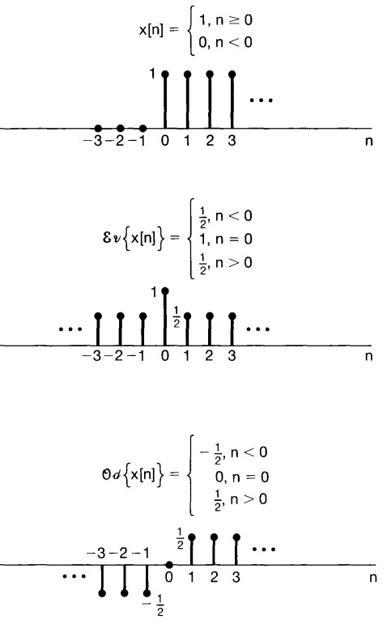
Complex number#
Cartesian form#
\(z=x+iy\)
Polar form#
\(z=re^{i\varphi}=r(cos(\varphi) + isin(\varphi))\)
\({\displaystyle r=|z|={\sqrt {x^{2}+y^{2}}}.}\)
\({\displaystyle \varphi =\arg(x+yi)={\begin{cases}2\arctan \left({\dfrac {y}{{\sqrt {x^{2}+y^{2}}}+x}}\right)&{\text{if }}y\neq 0{\text{ or }}x>0,\\\pi &{\text{if }}x<0{\text{ and }}y=0,\\{\text{undefined}}&{\text{if }}x=0{\text{ and }}y=0.\end{cases}}}\)
The Discrete Unit Impulse and Unit Step Functions#
\(\delta (n)={\begin{cases}+1 ,&n=0\\0,&n\neq 0\end{cases}}\)
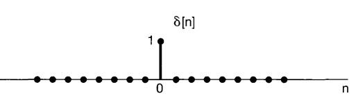
\(u(n)={\begin{cases}0 ,&n<0\\1,&n\ge 0\end{cases}}\)
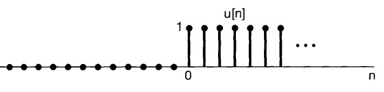
\(\delta[n]=u[n]-u[n-1]\)
\(u[n]=\sum_{m=-\infty}^{n} \delta[m]\)
Example:
\(u[-1]= \delta[-\infty]+... + \delta[-2]+\delta[-1]=0\)
\(u[2]=\delta[-\infty]+...+ \delta[-2]+ \delta[-1]+ \delta[0] + \delta[1]+\delta[2]=1\)
By changing the variable of summation from \(m\) to \(k = n - m\), we would have:
\(m = n -k \)
\(-\infty <m < n \)
\(-n <-m < +\infty \)
\(0 <n-m < n+\infty \)
\(u[n]=\sum_{k=0}^{+\infty} \delta[n-k]\)
\(n<0\)

\(n>0\)

The Continuous Unit Impulse and Unit Step Functions#
Continuous unit Step function:
\(u(t)={\begin{cases}+1 ,&t>0\\0,&t< 0\end{cases}}\)
to the relationship between the discrete-time unit impulse and step functions. In particular, the continuous-time unit step is the running integral of the unit impulse:
\(u(t)\int _{-\infty}^{t}\delta(\tau)d\tau \)
or by changing the variable of integration from \(\tau\) to \(\sigma = t- \tau\)
\(\tau = t- \sigma\)
\(u(t)=\int _{-\infty}^{t}\delta(\tau)d\tau = \int _{+\infty}^{0}\delta(t-\sigma)(-d\sigma)= \int _{0}^{+\infty}\delta(t-\sigma)d\sigma\)
\(\delta(t)=\frac{du(t)}{dt}\)
Basic System Propeties#
Systems with and without Memory#
A system is said to be memory less if its output for each value of the independent variable at a given time is dependent only on the input at that same time
Time Invariant#
Conceptually, a system is time invariant if the behavior and characteristics of the system are fixed over time. For example, a \(RC\) circuit is time invariant if the resistance and capacitance values \(R\) and \(C\) are constant over time. We would expect to get the same results from an experiment with this circuit today as we would if we ran the identical experiment tomorrow.
a system is time invariant if a time shift in the input signal results in an identical time shift in the output signal. That is, if \(y[n]\) is the output of a discrete-time, time-invariant system when \(x[n]\) is the input, then \(y [n- n_0 ]\) is the output when \(x [n-n_0 ]\) is applied.
Linearity#
If an input consists of the weighted sum of several signals,then the output is the superposition-that is, the weighted sum-of the responses of the system to each of those signals. let \(y_1(t)\) be the response of a continuous- time system to an input \(x_1(t)\), and let \(y_2(t)\) be the output corresponding to the input \(x_2(t)\).
Then the system is linear if:
The response to \(x_1 (t)+ x_2(t)\) is \(y_1(t)\) + \(y_2(t)\) (additivity property).
The response to \(ax_1(t)\) is \(ay_1(t)\), where \(a\) is any complex constant (scaling or homogeneity).
The two properties defining a linear system can be combined into a single statement:
continuous time: \(ax_1 (t) + bx2(t) \rightarrow ay_1(t) + by_2(t)\),
discrete time: \(ax_1[n] + bx_2[n] \rightarrow ay_1[n] + by_2[n]\).
it is straightforward to show from the definition of linearity that if \(x_k[n]\), \(k = 1, 2, 3, ... ,\) are a set of inputs to a discrete-time linear system with corresponding outputs \(y_k[n], k = 1, 2, 3, ...\) , then the response to a linear combination of these inputs given by:
\(x[n]=\sum_{k}a_{k}x_k[n]=a_{1}x_1[n]+a_{2}x_2[n]+a_{3}x_k[3]+...\)
is:
\(y[n]=\sum_{k}a_{k}y_k[n]=a_{1}y_1[n]+a_{2}y_2[n]+a_{3}y_k[3]+...\)
This very important fact is known as the superposition property
The Representation of Discrete-Time Signals in Terms of Impulses#
The key idea in visualizing how the discrete-time unit impulse can be used to construct any discrete-time signal is to think of a discrete-time signal as a sequence of individual impulses. For example consider the following signal:
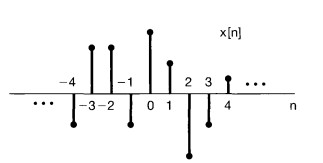
It can be depicted as five time-shifted, scaled unit impulse sequences, where the scaling on each impulse equals the value of \(x[n]\) at the particular instant the unit sample occurs.
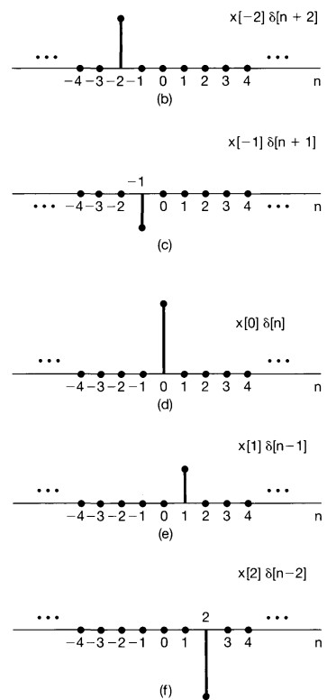
\(x[-1]\delta[n+1]= \left\{\begin{matrix} x[-1] & n=-1 \\ 0 & n\neq-1 \\ \end{matrix}\right.\)
\(x[0]\delta[n]= \left\{\begin{matrix} x[0] & n=0 \\ 0 & n\neq0 \\ \end{matrix}\right.\)
\(x[1]\delta[n-1]= \left\{\begin{matrix} x[1] & n=1 \\ 0 & n\neq1 \\ \end{matrix}\right.\)
\(x[n]=...+ x[-3]\delta[n+3]+x[-2]\delta[n+2]+x[-1]\delta[n+1]+x[0]\delta[n]+x[1]\delta[n-1]+x[2]\delta[n-2]+x[3]\delta[n-3]+... \)
so it can be written as:
\(x[n]=\sum_{k=-\infty}^{+\infty}x[k]\delta[n-k]\) which is sifting property of the discrete-time unit impulse
This corresponds to the representation of an arbitrary sequence as a linear combination of shifted unit impulses \(\delta[n- k]\), where the weights in this linear combination are \(x[k]\).
The Discrete-Time Unit Impulse Response and the Convolution-Sum Representation of LTI Systems#
Let \(h_k[n]\) denote the response of the linear system to the shifted unit impulse \(\delta[n - k]\), Then, from the superposition property for a linear system, the response \(y[n]\) of the linear system to the input \(x[n]=\sum_{k=-\infty}^{+\infty}x[k]\delta[n-k]\) is simply the weighted linear combination of these basic responses, the output \(y[n]\) can be expressed as:
\(y[n]=\sum_{k=-\infty}^{+\infty}x[k]h_k[n]\)
Example of Response of Linear System to Unit Impulse#
The following signal \(x[n]\) is applied as the input to a linear system (not necessarily time/ shift invariant)
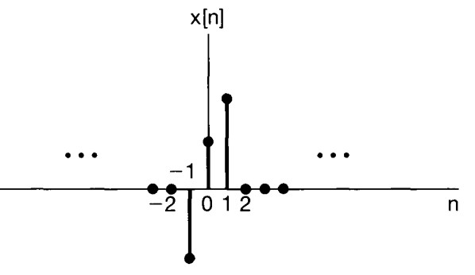

Response of Linear System and Time Invariant to Unit Impulse#
In general, of course, the responses \(h_k[n]\) need not be related to each other for differ ent values of \(k\). However, if the linear system is also time invariant, then these responses to time-shifted unit impulses are all time-shifted versions of each other. Specifically, since \(\delta[n- k]\) is a time-shifted version of \(\delta[n]\), the response \(h_k[n]\) is a time-shifted version of \(h_0[n]\) i.e.
\(h_k[n]=h_0[n-k]\)
For notational convenience, we will drop the subscript on \(h_0[n]\) and define the unit impulse (sample) response:
\(h[n]=h_0[n]\)
That is, \(h[n]\) is the output ofthe LTI system when \(\delta[n]\) is the input. Then for an LTI system, the equation
\(y[n]=\sum_{k=-\infty}^{+\infty}x[k]h_k[n]\)
will become:
\(y[n]=\sum_{k=-\infty}^{+\infty}x[k]h[n-k]\)
This result is referred to as the convolution:
\(y[n]=x[n]*h[n]\)
Two Interpretation of Convolution#
First Interpretation#
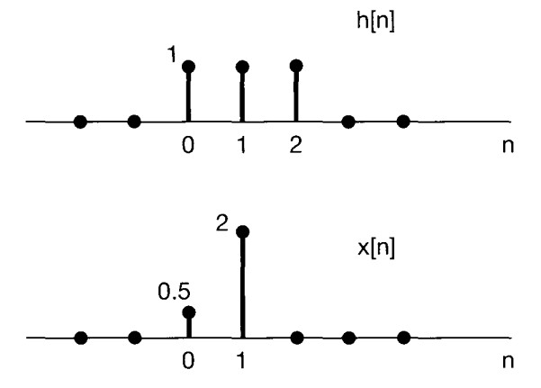
\(y[n]=x[0]h[n-0]+x[1]h[n-1]=0.5h[n-0]+2h[n-1]\)
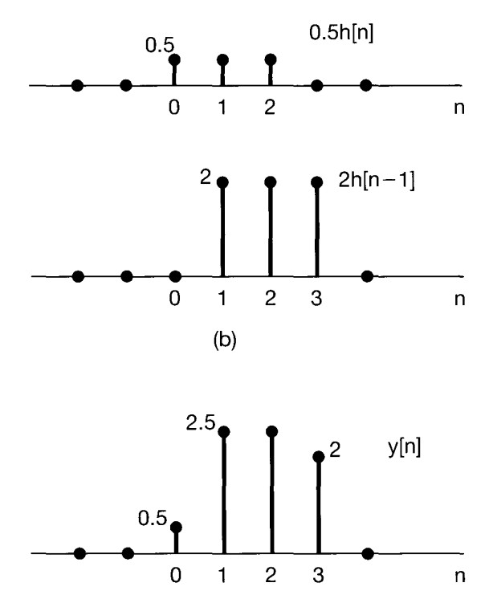
Second Interpretation#
Input Signal
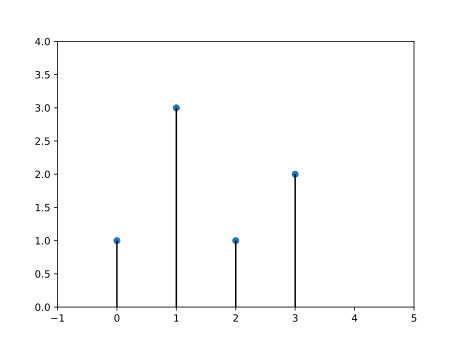
Reponse of the system to \(\delta\)
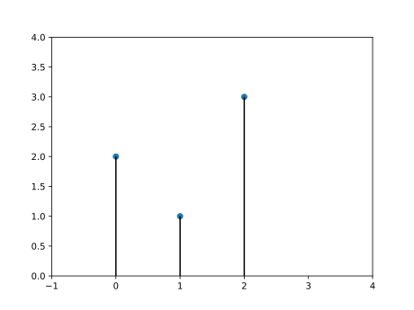
\(y[n]=\sum_{k=-\infty}^{+\infty}x[k]h[n-k]\)
\(x[k]h[n-k]\)
\(n=0\)
\(y[0]=...+x[-2]h[2]+x[-1]h[1]+x[0]h[0]+x[1]h[-1] +x[2]h[-2] +x[3]h[-3]+... \)
\(h: 3 \qquad 1 \qquad 2 \)
\(x: 0\qquad 0\qquad 1\qquad 3\qquad 1\qquad 2\qquad 0\qquad 0\qquad\)
\(n=1\)
\(y[1]=...+ x[-1]h[2]+ x[0]h[1]+ x[1]h[0]+ x[2]h[-1]+x[3]h[-2] +... \)
\(h: \ \ \qquad 3 \qquad 1 \qquad 2 \)
\(x: 0\qquad 0\qquad 1\qquad 3\qquad 1\qquad 2\qquad 0\qquad 0\qquad\)
\(n=2\)
\(y[2]=...+x[0]h[2] + x[1]h[1] + x[2]h[0]+ x[3]h[-1]+...\)
\(h: \ \ \qquad \ \ \qquad 3 \qquad 1 \qquad 2 \)
\(x: 0\qquad 0\qquad 1\qquad 3\qquad 1\qquad 2\qquad 0\qquad 0\qquad\)
\(y[n]=x[n]*h[n]= [2\quad 7\quad 8\quad 14\quad 5\quad 6]\)
The lenght of convolution response is: \(m+n-1\)
2D Convolution#
By convolving both horizontal and vertical directions in a two-dimensional spatial domain, 2D convolution is simply an expansion of prior 1D convolution. Smoothing, sharpening, and edge detection of images are all common applications for convolution.
The impulse in 2D space is \(\delta[m, n]\) where m and n is zero and zeros at \(m,n \neq 0\). The impulse response in 2D is usually called kernel or filter in image processing.
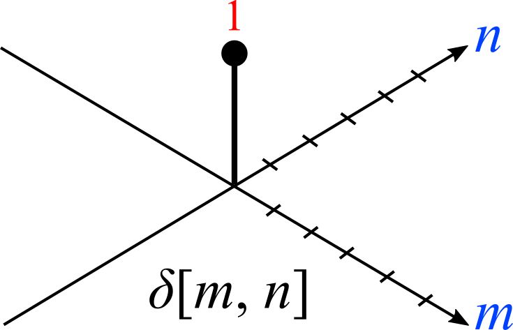
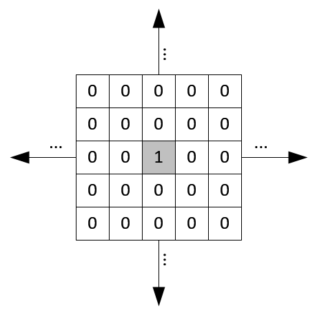
2D signal can be written as sum of scaled and shifted impulse functions: \(x[m,n]=\sum_{j=-\infty}^{+\infty} \sum_{i=-\infty}^{+\infty} x[i,j]\delta[m-i,nj]\)
The x-coordinate is defined here as increasing in the “right”-direction ( [column, row]), and the y-coordinate is defined as increasing in the “down”-direction.
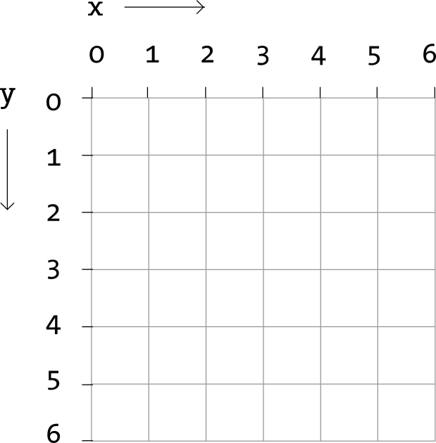
The output of linear and time invariant system can be written by convolution of input signal \(x[m, n]\), and response to delta function, \(h[m, n]\)
\(y[m,n]=x[m,n]*h[m,n]= \sum_{j=-\infty}^{+\infty} \sum_{i=-\infty}^{+\infty} x[i,j]h[m-i,n-j] \)
kernels in 2D are center originated, meaning \(h[0, 0]\) is the center point of a kernel.
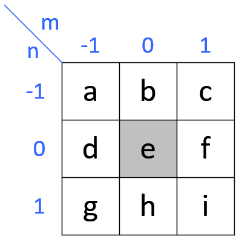
\(y[1,1]=x[1,1]*h[1,1]= \sum_{j=-\infty}^{+\infty} \sum_{i=-\infty}^{+\infty} x[i,j]h[1-i,1-j]=\\ x[0,0]h[1,1]+x[1,0]h[0,1]+x[2,0]h[-1,1]+\\ x[0,1]h[1,0]+x[1,1]h[0,0]+x[2,1]h[-1,0]+\\ x[0,2]h[1,-1]+x[1,2]h[0,-1]+x[2,2]h[-1,-1]\)
Note that the kernel matrix is turned upside down and then mirrored before multiplying the overlapped input data.
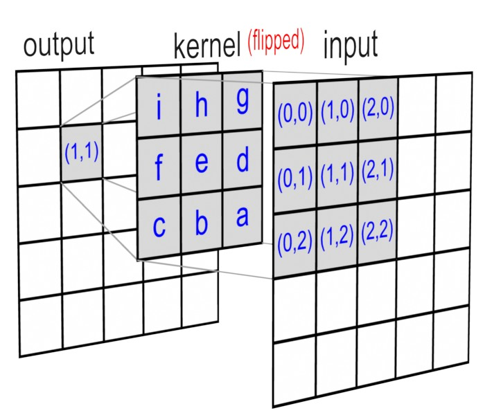
Refs: 1
Separable Convolution 2D#
Cross Correlation#
Each output unit is a linear function of localized subset of input units

\(H[x,y]=\sum_{v=-k}^{k} \sum_{u=-k}^{k} I[x+u,y+v] F[u,v]\)
Convolution 1#
Shape of the Convolution Output#
\(H_{out} =\left \lfloor \frac{ H_{in} +2 \times \text{padding[0]}-\text{dilation[0]} \times(\text{kernel_size}[0]-1)-1}{stride[0]} +1\right \rfloor\)
\(W_{out} =\left \lfloor \frac{ W_{in} +2\times \text{padding[1]}-\text{dilation[1]} \times(\text{kernel_size}[1]-1)-1}{stride[1]} +1\right \rfloor\)
2D Convolution as Matrix Multiplication#
You can write 2D Convolution as Matrix Multiplication. There are several way to do that
1) Discrete convolution#
You should use a doubly block circulant matrix which is a special case of Toeplitz matrix.
The following matrix is a Toeplitz matrix:
\(\begin{bmatrix} a & b & c & d & e \\ f & a & b & c & d \\ g & f & a & b & c \\ h & g & f & a & b \\ i & h & g & f & a \end{bmatrix}\)
Toeplitz matrix of a \(n×n\) matrix A is:
\({\displaystyle {\begin{bmatrix}a_{0}&a_{-1}&a_{-2}&\cdots &\cdots &a_{-(n-1)}\\a_{1}&a_{0}&a_{-1}&\ddots &&\vdots \\a_{2}&a_{1}&\ddots &\ddots &\ddots &\vdots \\\vdots &\ddots &\ddots &\ddots &a_{-1}&a_{-2}\\\vdots &&\ddots &a_{1}&a_{0}&a_{-1}\\a_{n-1}&\cdots &\cdots &a_{2}&a_{1}&a_{0}\end{bmatrix}}}\)
If the i,j element of A is denoted \(A_{i,j}\), then we have
\({\displaystyle A_{i,j}=A_{i+1,j+1}=a_{i-j}.\ }\)
\({\displaystyle y=k\ast x={\begin{bmatrix}k_{1}&0&\cdots &0&0\\k_{2}&k_{1}&&\vdots &\vdots \\k_{3}&k_{2}&\cdots &0&0\\\vdots &k_{3}&\cdots &k_{1}&0\\k_{m-1}&\vdots &\ddots &k_{2}&k_{1}\\k_{m}&k_{m-1}&&\vdots &k_{2}\\0&k_{m}&\ddots &k_{m-2}&\vdots \\0&0&\cdots &k_{m-1}&k_{m-2}\\\vdots &\vdots &&k_{m}&k_{m-1}\\0&0&0&\cdots &k_{m}\end{bmatrix}}{\begin{bmatrix}x_{1}\\x_{2}\\x_{3}\\\vdots \\x_{n}\end{bmatrix}}}\)
Refs: 1
2) Using im2col#
Suppose we have a single channel 4 x 4 image, X, and its pixel values are as follows:
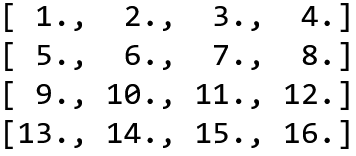
and our weight is:
\(\begin{bmatrix} 1 &2 \\ 3& 4 \end{bmatrix}\)
This means that there will be 9 2 x 2 image patches that will be element-wise multiplied with the matrix W, like so:
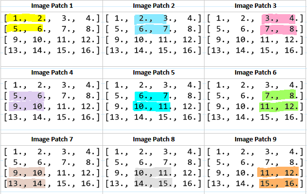
These image patches can be represented as 4-dimensional column vectors and concatenated to form a single 4 x 9 matrix, P, like so:
To perform the convolution, we first matrix multiply K with P to get a 9-dimensional row vector (1 x 9 matrix) which gives us:
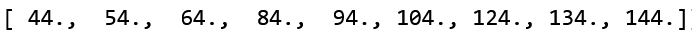
Then we reshape the result of K P to the correct shape, which is a 3 x 3 x 1
Refs: 1
3) Using Doubly Block Circulant Matrix#
Let’s say we have a filter \(k\) of size \( m\times m\) and your input data \(\times\) is of size \(n\timesn\).


You should unroll \(k\) into a sparse matrix of size \((n-m+1)^2 \times n^2\), and unroll x into a long vector \(n^2 \times 1\)


In the end you should reshape your vector. Convert the resulting vector (which will have a size \((n-m+1)^2 \times 1)\) into a \(n-m+1\) square matrix
Convolution in RGB Images#
Number of channels in our image must match the number of channels in our filter, so these two numbers have to be equal. The output of this will be a \(4 \times 4 \times 1\). We ofetn have \(k\) filters of size \(3\times3\times3\) so the output would be \(k\) images of size \(4 \times 4 \times 1\)

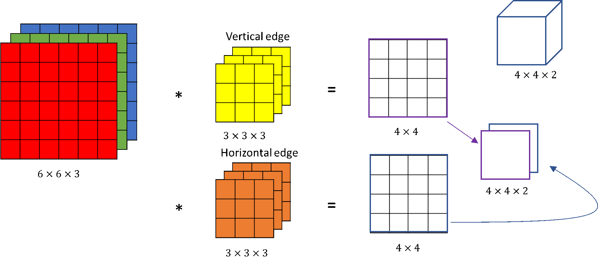
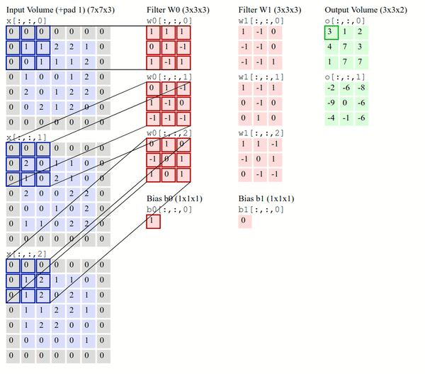
Transpose Convolution#
AKA :
Deconvolution (bad)
Upconvolution
Fractionally strided convolution
Backward strided convolution
No padding, no strides, transposed

Full padding, no strides, transposed

1x1 Convolution (Network-in-Network)#
Lets say you have tensor \((N, C, H, W)\), (\(N\) is the batch size, \(CF\) is the number of channel, \( H,W\) are the spatial dimensions). Suppose this output is fed into a conv layer with \(F_1\) \(1\times1\times C\) with zero padding and stride 1. Then the output of this \(1\times1\) conv layer will have shape \((N,1,H,W)\). We dot product every element of the filter with the tensor and apply a RelU function on the output. You can imagine this a single neuron which has \(C\) input. Thats why it is called Network-in-Network.
You can use a \(1\times1\) convolutional layer to reduce \(n_C\) but not \(n_H, n_W\).
You can use a pooling layer to reduce \(n_H\), \(n_W\), and \(n_C\).
Dilated Convolutions#
This can be very useful in some settings to use in conjunction with 0-dilated filters because it allows you to merge spatial information across the inputs much more agressively with fewer layers. For example, if you stack two 3x3 CONV layers on top of each other then you can convince yourself that the neurons on the 2nd layer are a function of a 5x5 patch of the input (we would say that the effective receptive field of these neurons is 5x5). If we use dilated convolutions then this effective receptive field would grow much quicker.

Refs: 1